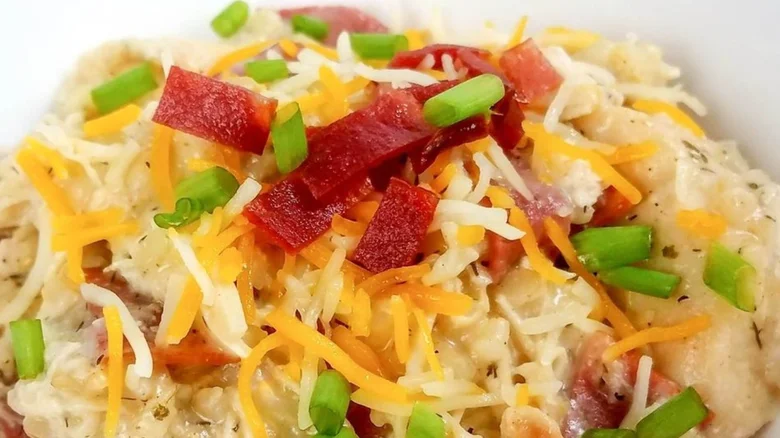

Crack Chicken

A savory meal perfect for cool fall weeknights!
This meal is a TikTok sensation and is sure to please every member of the family (or just yourself and plenty of leftovers!). This is a slow cooker recipe which is perfect for a set it and forget it weeknight meal.
Ingredients
- Boneless, Skinless Chicken Breast
- Cream Cheese
- Cheddar Cheese
- Ranch Seasoning
- Bacon
- Chicken Stock
Directions
- Grease your slow cooker with nonstick cooking spray
- Add the chicken breast to the bottom of the cooker and add 1/2 cups of chicken stock
- Add 1 packet of ranch seasoning on top of the chicken
- Cube 8oz of cream cheese and add on top of the chicken
- Add 2 cups of shredded cheddar cheese
- Put the lid on the slow cooker and let it cook on low for 6 hours
- Before serving, cook as much bacon as desired and dice to add on top of chicken
- Add bacon to the chicken and use a hand mixer to shred and mix it all up
- Enjoy!
I chose to make sandwhiches with the crack chicken but you can serve it however you want! It is very versitile and good on pretty much anything. I have even seen people make pizza with this as the sauce and topping.